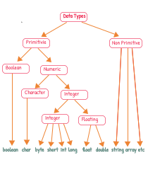

Data types are used to define the type of data that a variable can hold. In Java, there are several data types, including integers, decimals, and strings.
Here is an example of how to declare and initialize an integer variable in Java:
int age = 25;You can also declare a variable without initializing it:
int age;Then, you can assign a value to it later:
age = 25;It is important to choose the appropriate data type for your variable, as this can affect the amount of memory used by your program and the accuracy of your calculations.
| Type | Byte | Range |
|---|---|---|
| byte | 1 byte | -128 to 127 |
| short | 2 bytes | -32,768 to 32,767 |
| int | 4 bytes | -2,147,483,648 to 2,147,483,647 |
| long | 8 bytes | -9,223,372,036,854,775,808 to 9,223,372,036,854,775,807 |
| float | 4 bytes | Approximately ±3.40282347E+38F |
| double | 8 bytes | Approximately ±1.79769313486231570E+308 |
| char | 2 bytes | 0 to 65,536 |
| boolean | 1 | true or false |
In Java, we use the Scanner class to take inputs. Here's how you can take inputs for different data types:
import java.util.Scanner; // Import the Scanner class
public class MyClass
{
public static void main(String[] args)
{
Scanner sc = new Scanner(System.in); // Create a Scanner object
System.out.println("Enter an integer");
int a = sc.nextInt(); // Read user input
}
}Don't worry if you don't understand the entire code right now. You will get to know every bit of it later in the course.
Comments in Java are used for several reasons:
In Java, there are two types of comments:
// This is a single-line comment /* This is a
multi-line comment */